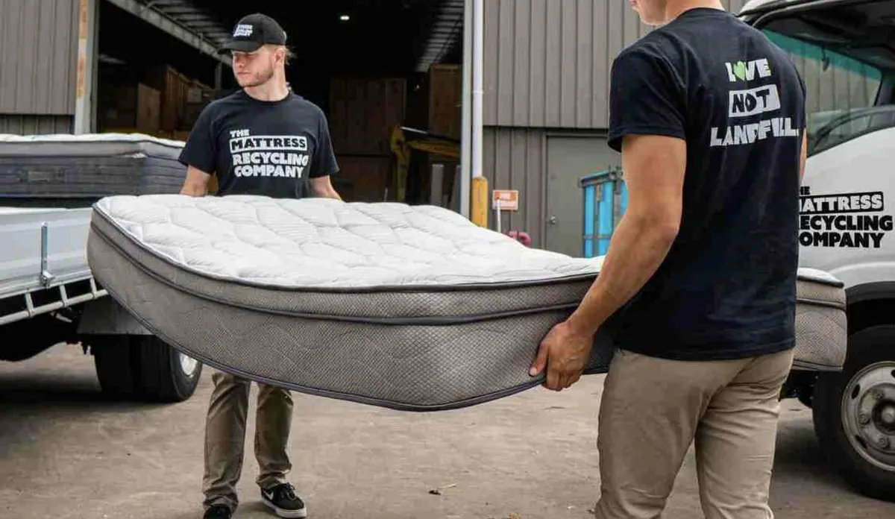
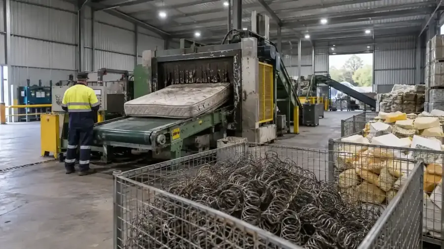
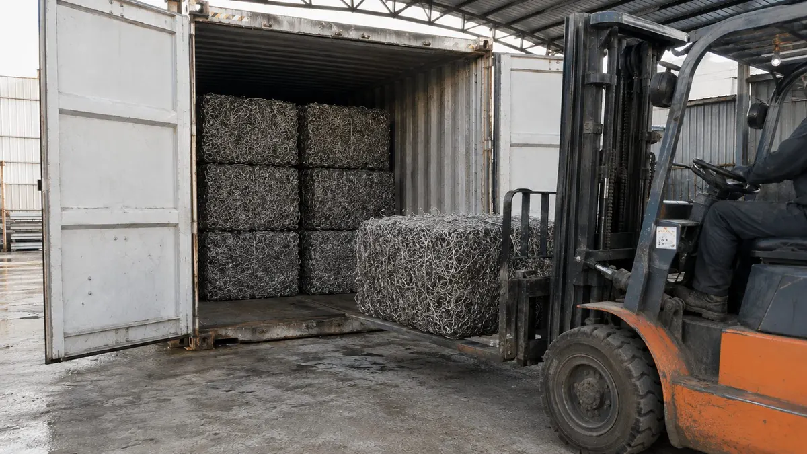

Snap it.
Pin it.
Gone.
Seen dumped rubbish? Report it in under a minute. We send it to whoever's responsible, a public clock runs until it's collected, and what gets collected is recycled, not landfilled.

Three taps. That's the whole app.
Made for standing on a footpath with one hand free. No app to download, no account, no forms.
Snap it
Take a photo. One is plenty, and you can skip it if you have to.
Pin it
Your phone finds the spot. Nudge the map if the rubbish is across the road.
Tap what it is
Mattress, couch, tyres, rubble. Tap what you can see and hit send.
Anyone can see how long it's been there, right up until it's gone.
What happens after you hit send



Every collected report gets a recovery receipt like this one, so you can see what happened to it.
On the clock right now
Every open report counts up until it's collected. Tap one to see who has it.
Sample reports
Don't dump it. There's an easier way.
Getting rid of big stuff feels hard, so people dump it. Tell us what you've got and we'll show you the quickest legal way to move it.
Find the easy wayCouncils and land managers: we collect it, recycle it and prove it.
Questions
Is it free?
Yes, for residents. There's no app to download and no account to make.
Will anyone know it was me?
No. Your name and contact details aren't sent with the report. Add a phone number or email only if you want updates.
What shouldn't I touch?
Anything that might be asbestos, chemicals, gas bottles or syringes. Keep clear and tap "Asbestos or chemicals?" in the app. If someone's in danger, call 000.
What if it's not on council land?
We work out who's responsible from the spot you pin: the council, the state for main roads, VicTrack for rail land or Parks Victoria in a park. If we get it wrong, they pass it on in one tap and the clock keeps running.
Who collects it?
Whoever is responsible for the land decides. Where they partner with us, a Recycle Group crew collects it the next working day and recycles what can be recycled.
I saw who did it. Can I report them?
Add the vehicle rego if you saw it. It goes to the council and EPA Victoria for investigation, nowhere else. We never publish names or number plates.
Who runs No More Dumping?
It's a Recycle Group initiative. This site is a working prototype, so the reports on it are samples.